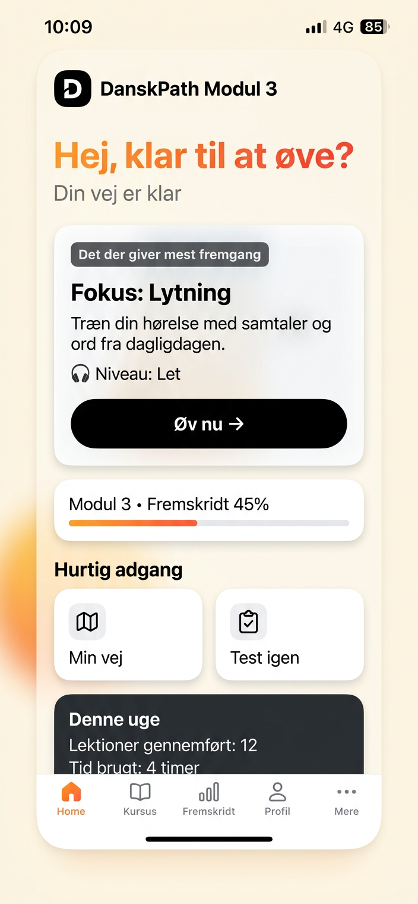

Not a list of lessons. One recommendation that moves you toward Modultest and PD3, with why it matters now and what it unlocks in real life. 15 min, one hand on bus, infinite variants, no repeat 30 days, SRS Box 0→5.

Princip: V2 er 80% af B1-fejl — normalt. 17 topics A1→B2, variationEngine 5,100+ variants, 30-dage regel ingen gentagelse
Not "møde = meeting" but "holde et møde". 200→1354 active, 3000 receptive, Box 0 new → Box5 secure, variation per learner
Du har boet i lejligheden i 3 år. Håndværkeren skulle komme i dag kl 10, men er ikke kommet. Skriv email til udlejer: forklar situation, hvad du har gjort, hvad du ønsker. Brug fordi, at han ikke kommer (ledsætning), har boet (perfect).